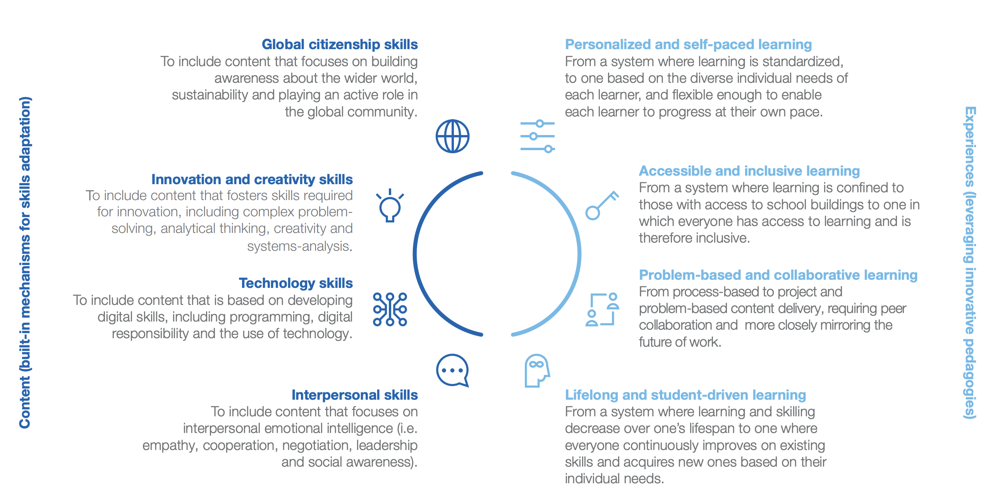
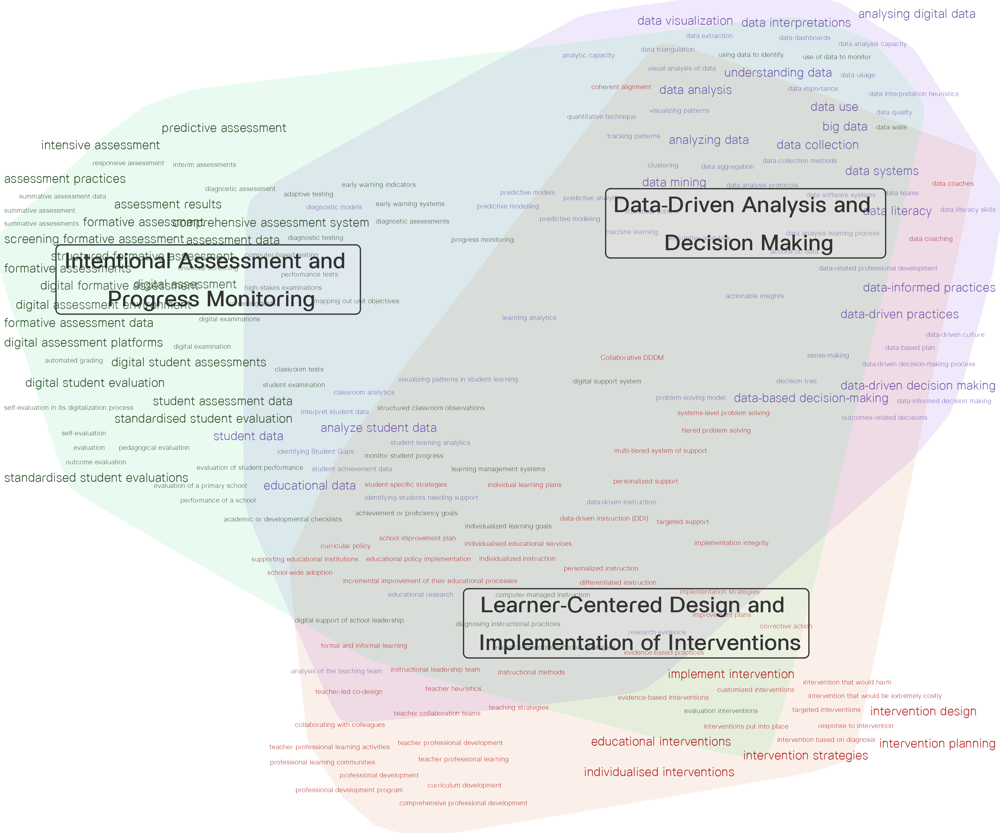

ชื่อเอกสารของคุณ
ตอนที่ 1: บทนำ
การปฏิวัติอุตสาหกรรมครั้งที่ 4 (the fourth industrial revolution: 4IR) ได้เปลี่ยนแปลงโลกของเราไปอย่างรวดเร็ว เทคโนโลยีดิจิทัล การเรียนรู้ของเครื่อง (machine learning) และปัญญาประดิษฐ์ (artificial intelligence) กลายเป็นองค์ประกอบสำคัญในระบบการผลิตและการให้บริการของสังคมยุคใหม่ แนวโน้มดังกล่าวไม่เพียงแต่เปลี่ยนแปลงวิธีการทำงาน แต่ยังส่งผลกระทบโดยตรงต่อทักษะและสมรรถนะที่ตลาดแรงงานต้องการ ทักษะจำนวนมากที่เคยเป็นที่ต้องการในอดีตโดยเฉพาะทักษะที่เป็นงานซ้ำเดิม ใช้ตรรกะ หรือการตัดสินใจตามรูปแบบ กำลังถูกทดแทนด้วยเทคโนโลยี ในขณะที่ทักษะใหม่ เช่น ความคิดสร้างสรรค์ การแก้ปัญหาที่ซับซ้อน การสื่อสาร และการเรียนรู้ตลอดชีวิต กลับกลายเป็นทักษะที่เป็นที่ต้องการมากขึ้นเรื่อย ๆ สภาพการเปลี่ยนแปลงดังกล่าวนี้ทำให้ระบบการศึกษาไม่สามารถใช้กรอบแนวคิดแบบเดิมที่เน้นการถ่ายทอดความรู้แบบตายตัวได้อีกต่อไป การจัดการศึกษาจำเป็นต้องมีการปรับเปลี่ยนทั้งในด้านเนื้อหา รูปแบบการจัดการเรียนรู้ และบทบาทของผู้เรียนและครูผู้สอน ทั้งนี้เพื่อเตรียมให้ผู้เรียนมีความพร้อมสำหรับโลกในอนาคตที่มีแนวโน้มเปลี่ยนแปลงอย่างรวดเร็วและคาดการณ์ได้ยาก
จากความจำเป็นนี้ จึงเกิดการเสนอกรอบแนวคิดการศึกษา 4.0 (Education 4.0) ทั้งในระดับนโยบายและแนวปฏิบัติ (Joshi, 2022; World Economic Forum, 2020, 2024)ซึ่งล้วนชี้ให้เห็นถึงแนวทางที่สอดคล้องกันเกี่ยวกับการยกระดับระบบการศึกษาด้วยการปรับทั้งเนื้อหา และประสบการณ์การเรียนรู้ ให้สอดคล้องกับทักษะและความสามารถที่จำเป็นในศตวรรษที่ 21 แนวคิดสำคัญของ Education 4.0 สามารถสรุปได้เป็นหลักสำคัญ 3 ประการ ได้แก่ 1) การเรียนรู้ที่ยืดหยุ่นและตอบโจทย์รายบุคคล ออกแบบการเรียนรู้ให้สอดคล้องกับศักยภาพ ความสนใจ และจังหวะการเรียนของผู้เรียนแต่ละคน พร้อมเปิดโอกาสให้ทุกคนสามารถเข้าถึงการศึกษาที่มีคุณภาพได้อย่างเท่าเทียม 2) การพัฒนาทักษะที่ตอบโจทย์โลกอนาคต ปรับเนื้อหาให้มุ่งเน้นทักษะในศตวรรษที่ 21 เช่น ความคิดสร้างสรรค์ การแก้ปัญหาที่ซับซ้อน การทำงานร่วมกับผู้อื่น การใช้เทคโนโลยีอย่างรับผิดชอบ และความพลเมืองโลก และ 3) การใช้เทคโนโลยีเป็นเครื่องมือเพื่อเสริมพลังการเรียนรู้ นำเทคโนโลยีมาใช้เพื่อออกแบบและจัดการเรียนรู้ที่หลากหลาย มีประสิทธิภาพ และเหมาะสมกับบริบทของผู้เรียน ไม่ใช่เพียงเพื่อความทันสมัย แต่เพื่อสร้างโอกาสในการเรียนรู้ที่ลึกซึ้งและยั่งยืนมากขึ้น
แม้จะมีการขับเคลื่อนแนวคิด Education 4.0 อย่างชัดเจน ทั้งในเชิงนโยบายและการสนับสนุนด้านเทคโนโลยีที่สนับสนุนการจัดการเรียนรู้ เช่น ระบบการเรียนรู้ดิจิทัล ปัญญาประดิษฐ์ รวมทั้งมีการจัดอบรมให้ความรู้และพัฒนาทักษะการใช้เทคโนโลยีและปัญญาประดิษฐ โดยเฉพาะด้านที่เกี่ยวกับการสร้างสื่อการสอน หรือการบริหารจัดการห้องเรียนผ่านแพลตฟอร์มต่าง ๆ ให้กับครูอย่างต่อเนื่อง แต่ห้องเรียนส่วนใหญ่ยังไม่สามารถเปลี่ยนผ่านไปสู่ Education 4.0 ได้อย่างมีประสิทธิภาพ ซึ่งสะท้อนถึงปัจจัยที่เป็นอุปสรรคเชิงระบบอื่นที่ไม่ได้เกิดจากเทคโนโลยี
สภาพเช่นนี้มีลักษณะปัญหาที่คล้ายคลึงกับการเปลี่ยนผ่านขององค์กรในภาคธุรกิจและอุตสาหกรรม ซึ่งแม้จะมีนโยบายและแผนกลยุทธ์ในการปรับตัวสู่ยุคดิจิทัลอย่างเป็นระบบ แต่กลับเผชิญอุปสรรคภายในที่ไม่เกี่ยวข้องกับเทคโนโลยีโดยตรง จากรายงานการสำรวจของ Gartner (2021) อ้างถึงโดย Heizenberg (2021) พบว่าอุปสรรคสำคัญในการขับเคลื่อนองค์กรด้วยข้อมูลและเทคโนโลยีมักไม่ได้อยู่ที่ระบบหรือเครื่องมือ แต่คือ ปัญหาเชิงบุคลากรภายในองค์กร โดยเฉพาะใน 4 ประเด็นหลัก ได้แก่ วัฒนธรรมองค์กรที่ไม่เปิดรับการเปลี่ยนแปลง การขาดทรัพยากรหรือเงินทุนในการสนับสนุนการดำเนินการ การขาดความฉลาดรู้ด้านข้อมูล (data literacy) และการขาดบุคลากรที่มีทักษะที่เกี่ยวข้อง
Gartner ยังเน้นย้ำว่าการใช้ข้อมูลและปัญญาประดิษฐ์คือตัวเปลี่ยนเกมส์ (game changer) ของการเปลี่ยนผ่านยุคดิจิทัล โดยเฉพาะอย่างยิ่งธุรกิจดิจิทัล จะไม่สามารถขับเคลื่อนไปได้ หากบุคลากรไม่สามารถ พูดภาษาข้อมูล (speak data) ได้ โดย Gartner ระบุว่าความฉลาดรู้ด้านข้อมูล คือทักษะสำคัญที่จะทำให้บุคลากรทุกคนสามารถเข้าใจว่า สารสนเทศเชิงลึกเกิดขึ้นจากการวิเคราะห์และปัญญาประดิษฐ์อย่างไร มีบทบาทและสร้างคุณค่าต่อองค์กรอย่างไร อีกทั้งยังเป็นหัวใจสำคัญของการสร้างวัฒนธรรมที่ขับเคลื่อนด้วยข้อมูล (data-driven culture) (Gartner, Inc., 2021)
สถานการณ์ในภาพการศึกษาก็มีแนวโน้มสะท้อนอุปสรรคที่คล้ายคลึงกัน ดังนั้นหากต้องการให้การเปลี่ยนผ่านสู่ Education 4.0 เกิดขึ้นได้จริง การที่ครูมีและใช้เทคโนโลยีเพียงอย่างเดียวอาจไม่เพียงพอ แต่จำเป็นต้องได้รับการพัฒนาทักษะความฉลาดรู้ด้านข้อมูล ควบคู่กัน เพื่อให้สามารถวิเคราะห์ แปลความ และใช้สารสนเทศเชิงลึกร่วมกับปัญญาประดิษฐ์ในการออกแบบการเรียนรู้ วางแผนการสอนเฉพาะบุคคล และตัดสินใจได้อย่างแม่นยำ ซึ่งถือเป็นเงื่อนไขสำคัญในการสร้างห้องเรียนดิจิทัลอย่างแท้จริง
แม้ว่าการพัฒนาความฉลาดรู้ด้านข้อมูล จะเป็นเงื่อนไขสำคัญที่ทำให้ครูสามารถใช้ข้อมูลและเทคโนโลยีในการจัดการเรียนรู้ได้อย่างมีประสิทธิภาพ แต่ในทางปฏิบัติยังพบว่า การใช้ข้อมูลและ AI ในโรงเรียนส่วนใหญ่ยังขาดทิศทางและระบบสนับสนุนที่เป็นรูปธรรม การขาดกรอบแนวคิดหรือกรอบการดำเนินงานที่ชัดเจน ซึ่งสามารถเชื่อมโยงการใช้ข้อมูล การประยุกต์ใช้ AI และการจัดการเรียนรู้เข้าด้วยกันอย่างเป็นระบบ ส่งผลให้การนำเทคโนโลยีและข้อมูลมาใช้ในการศึกษายังคงเป็นการดำเนินการแบบแยกส่วน (fragmented approach) ที่ไม่สามารถสร้างผลกระทบที่เป็นระบบต่อการเรียนรู้ของผู้เรียนได้
การศึกษาหลายชิ้นชี้ให้เห็นว่า แม้ครูจะมีความรู้ด้านข้อมูล แต่หากขาดกรอบการทำงานที่ชัดเจนและระบบสนับสนุนที่เหมาะสม การใช้ข้อมูลในชั้นเรียนมักเป็นลักษณะเฉพาะกิจ (ad hoc) ขาดความเชื่อมโยงระหว่างวัตถุประสงค์ของการประเมิน การวิเคราะห์ข้อมูล และการนำผลลัพธ์ไปใช้ในการตัดสินใจเชิงการเรียนรู้ในห้องเรียน นอกจากนี้ งานศึกษายังสะท้อนให้เห็นว่า แนวคิดเกี่ยวกับความฉลาดรู้ด้านข้อมูล ในบริบทของการศึกษา ยังขาดความชัดเจนและขอบเขตที่เป็นที่ยอมรับร่วมกัน ทั้งในด้านนิยาม องค์ประกอบ และจุดเน้นของทักษะที่ควรได้รับการส่งเสริม โดยบางกรอบแนวคิดให้ความสำคัญกับความสามารถทางเทคนิค เช่น การวิเคราะห์และตีความข้อมูล ในขณะที่กรอบอื่น ๆ มุ่งเน้นการใช้ข้อมูลเพื่อการตัดสินใจ การรู้เท่าทันข้อมูล หรือแม้แต่ประเด็นด้านจริยธรรมและบริบททางสังคมของข้อมูล (Doğan, 2023; Palsa, Fagerlund, & Mertala, 2024) ความคลุมเครือและหลากหลายในการทำความเข้าใจแนวคิดนี้ ส่งผลให้ยากต่อการกำหนดทิศทางการพัฒนาอย่างเป็นระบบ ไม่ว่าจะเป็นการออกแบบหลักสูตรฝึกอบรม การสร้างเครื่องมือประเมิน หรือการพัฒนานโยบายระดับองค์กรและระบบการศึกษา ทั้งยังเป็นอุปสรรคต่อการสร้างกรอบการดำเนินงานที่สามารถนำความฉลาดรู้ด้านข้อมูล ไปประยุกต์ใช้ในทางปฏิบัติได้อย่างมีประสิทธิภาพและยั่งยืน
ช่องว่างทั้งในด้านการเปลี่ยนผ่านเชิงระบบ การใช้ข้อมูลอย่างแยกส่วน และความไม่ชัดเจนของแนวคิดความฉลาดรู้ด้านข้อมูล ในบริบทการศึกษา ทำให้เห็นถึงความจำเป็นในการพัฒนากรอบการทำงานที่สามารถเชื่อมโยงการใช้ข้อมูล การประยุกต์ใช้ AI และการจัดการเรียนรู้เข้าด้วยกันอย่างเป็นระบบและมีเป้าหมายร่วมกันอย่างชัดเจน
บทความนี้จึงมีวัตถุประสงค์เพื่อเสนอกรอบแนวคิด AI & Data-Driven Classroom Framework ซึ่งเป็นการออกแบบระบบห้องเรียนยุคใหม่ที่บูรณาการการใช้ข้อมูลกับเทคโนโลยีปัญญาประดิษฐ์อย่างเป็นระบบ โดยมีเป้าหมายเพื่อลดช่องว่างระหว่างแนวคิด Education 4.0 กับการปฏิบัติจริงในระดับห้องเรียน ให้การเรียนรู้ที่เน้นผู้เรียนเป็นศูนย์กลางสามารถเกิดขึ้นได้อย่างมีประสิทธิภาพ ทั้งนี้การบูรณาการปัญญาประดิษฐ์ไม่ได้เป็นเพียงการเพิ่มเทคโนโลยีเพื่อความทันสมัย แต่เพื่อเป็นกลไกสำคัญที่ช่วยให้ครูสามารถออกแบบการวัดและประเมินผล วิเคราะห์ข้อมูลเชิงลึกของผู้เรียน คาดการณ์ปัญหา และออกแบบการช่วยเหลือที่เหมาะกับผู้เรียนเฉพาะบุคคลได้อย่างเป้นระบบ
ตอนที่ 2 Education 4.0 กับการเรียนรู้ในศตวรรษที่ 21
การศึกษาในศตวรรษที่ 21 ได้เผชิญกับการเปลี่ยนแปลงอย่างรวดเร็วจากหลายปัจจัย ไม่ว่าจะเป็นการเปลี่ยนแปลงทางเทคโนโลยี เศรษฐกิจ สังคม สิ่งแวดล้อม และความก้าวหน้าทางวิทยาศาสตร์ ซึ่งทั้งหมดนี้ก่อให้เกิดคลื่นลูกที่สี่ของการปฏิวัติอุตสาหกรรม และนำมาสู่ Education 4.0 ซึ่งเป็นกรอบแนวคิดสำคัญในการพัฒนาบุคลากรให้มีความรู้ ทักษะ ที่ตอบสนองต่อโลกยุคใหม่ที่เต็มไปด้วยความไม่แน่นอน ซับซ้อน และเชื่อมโยงกันอย่างยิ่งยวด (hyper-connectivity) (Organisation for Economic Co-operation and Development (OECD), 2018)
แนวคิด Education 4.0 ถูกพัฒนาขึ้นตามการเปลี่ยนแปลงของบริบททางสังคม เศรษฐกิจ และเทคโนโลยีในแต่ละยุคสมัย โดยสามารถจำแนกได้เป็น 4 ยุคหลักตามคุณลักษณะสำคัญ โดยเริ่มจาก Education 1.0 ที่ผู้เรียนมีบทบาทเพียงผู้รับสารส่วนครูมีหน้าที่ในการถ่ายทอดแบบทางเดียวภายใต้แนวคิด one-size-fits-all ด้วยเครื่องมือที่จำกัดอยู่เพียงกระดานดำและหนังสือเรียนเพื่อปลูกฝังระเบียบวินัยและความรู้พื้นฐาน ต่อมาพัฒนาสู่ Education 2.0 ที่ผู้เรียนเริ่มมีปฏิสัมพันธ์มากขึ้นแม้ว่าจะยังคงเป็นผู้รับความรู้เป็นหลัก ขณะที่ครูเปลี่ยนบทบาทจากผู้ถ่ายทอดเป็นผู้นำการเรียนรู้ด้วยการใช้สื่อโสตทัศน์ วิทยุ และโทรทัศน์เพื่อพัฒนากำลังคนให้เหมาะสมกับระบบเศรษฐกิจอุตสาหกรรมที่ซับซ้อนขึ้น จากนั้นก้าวไปสู่ Education 3.0 ที่เปิดกว้างให้ผู้เรียนมีอิสระและมีส่วนร่วมในการเรียนรู้มากขึ้นพร้อมสามารถเข้าถึงข้อมูลได้หลากหลาย ในขณะที่ครูปรับเปลี่ยนบทบาทเป็นผู้อำนวยความสะดวก (facilitator) ในการเรียนรู้ด้วยการใช้คอมพิวเตอร์และอินเทอร์เน็ตเป็นเครื่องมือหลักเพื่อส่งเสริมทักษะการคิดและการเรียนรู้ด้วยตนเอง และในที่สุดมาสู่ Education 4.0 Education 4.0 เป็นแนวคิดที่เริ่มมีการพูดถึงและได้รับความสนใจมากขึ้นตั้งแต่ประมาณปี ค.ศ. 2015 โดยมีองค์กรระดับนานาชาติหลายองค์กร เช่น World Economic Forum (WEF) และ OECD เป็นผู้ผลักดันหลัก โดย WEF เสนอกรอบ Education 4.0 โดยให้ความสำคัญของการจัดการศึกษาที่สอดคล่้องกับในยุคของการปฏิวัติอุตสาหกรรมครั้งที่ 4 ในขณะที่ OECD เสนอกรอบ OECD Learning Framework 2030 ภายใต้โครงการ Education 2030 โดยทั้งสองกรอบมีจุดร่วมกันคือ การส่งเสริมให้ผู้เรียนมีความพร้อมต่อการเปลี่ยนแปลงของโลกในอนาคต ด้วยการพัฒนาความรู้ ทักษะ ทัศนคติ และค่านิยมที่จำเป็นต่อการใช้ชีวิตอย่างมีคุณภาพและยั่งยืน (Organisation for Economic Co-operation and Development (OECD), 2018; World Economic Forum, 2023, 2024)

World Economic Forum เสนอว่า Education 4.0 ควรมีการพัฒนาให้ครอบคลุมในสองด้านหลัก ได้แก่ ด้านเนื้อหา และ การจัดประสบการณ์การเรียนรู้ เพื่อเตรียมผู้เรียนให้มีทักษะและสมรรถนะที่ตอบโจทย์ศตวรรษที่ 21 ได้อย่างแท้จริง ดังแสดงในภาพที่ 1 รายละเอียดมีดังนี้
ด้านเนื้อหา (content: built-in mechanisms for skill adaptation) ประกอบด้วยเนื้อหาการเรียนรู้ที่ควรช่วยพัฒนา 4 ทักษะสำคัญได้แก่ (1)ทักษะความเป็นพลเมืองโลก (global citizen skills) สร้างความตระหนักรู้ด้านความยั่งยืน บทบาทพลเมืองโลก และความเข้าใจโลกในมิติกว้าง (2) ทักษะนวัตกรรมและความคิดสร้างสรรค์ (innovation and creativity skills) เสริมสร้างความคิดสร้างสรรค์ การแก้ปัญหาที่ซับซ้อน การคิดวิเคราะห์ และกาารคิดเชิงระบบ (3) ทักษะเทคโนโลยี (technology skills) ส่งเสริมการพัฒนาทักษะดิจิทัล เช่น การเขียนโปรแกรม ความรับผิดชอบต่อเทคโนโลยี และการใช้เครื่องมือดิจิทัลอย่างเหมาะสม และ (4) ทักษะความสัมพันธ์ระหว่างบุคคล (interpersonal skills) พัฒนาความฉลาดทางอารมณ์ การทำงานร่วมกัน ความเห็นอกเห็นใจ ทักษะการเจรจา ความเป็นผู้นำ และการมีจิตสำนึกทางสังคม
ด้านประสบการณ์การเรียนรู้ (experiences: leveraging innovative pedagogies) กระบวนการจัดการเรียนรู้ควรมีลักษณะสำคัญดังนี้ (1) การเรียนรู้เฉพาะบุคคลและสามารถปรับได้ตามความต้องการของผู้เรียน (personalized learning and self-paced learning) การเรียนรู้ที่ปรับตามความต้องการเฉพาะบุคคล และเปิดโอกาสให้ผู้เรียนสามารถออกแบบการเรียนรู้และเรียนรู้ตามจังหวะของตนเอง (2) การเรียนรู้ที่เข้าถึงได้และคำนึงถึงความหลากหลาย (accessible and inclusive learning) เปิดกว้างให้ผู้เรียนทุกคนเข้าถึงการเรียนรู้ได้โดยไม่จำกัดสถานที่ ภูมิหลังทางเศรษฐกิจและสังคม หรือเงื่อนไขทางกายภาพ (3) การใช้ปัญหาเป็นฐานและการเรียนรู้แบบร่วมมือรวมพลัง (problem-based and collaborative learning) เน้นการทำโครงงาน แก้ปัญหา และการทำงานร่วมกันใรลักษณะที่สะท้อนลักษณะงานในโลกยุคใหม่ (4) การเรียนรู้ตลอดชีวิตและมีผู้เรียนเป็นศูนย์กลาง (lifelong and student-driven learning) สนับสนุนการเรียนรู้ต่อเนื่องตลอดชีวิต โดยผู้เรียนมีบทบาทสำคัญในการกำหนดทิศทางการเรียนรู้ของตนเอง
แนวคิดจาก WEF นี้สอดคล้องกับกรอบของ OECD ที่มุ่งเน้นการพัฒนาผู้เรียนให้มีสมรรถนะในการเป็นผู้ขับเคลื่อนการเรียนรู้ (learner agency) และสามารถปรับตัวในโลกที่ซับซ้อนและเปลี่ยนแปลงอย่างรวดเร็วได้อย่างยั่งยืน ในประเทศไทย แม้คำว่า “Education 4.0” จะไม่ปรากฏอย่างเป็นทางการในนโยบายระดับชาติ แต่ “ยุทธศาสตร์ชาติ 20 ปี (2561–2580)” ได้สะท้อนแนวคิดที่สอดคล้องอย่างชัดเจน เช่น การพัฒนาทักษะศตวรรษที่ 21 การเรียนรู้ตลอดชีวิต การส่งเสริมแพลตฟอร์มดิจิทัล และการบูรณาการข้อมูลเพื่อการเรียนรู้ ซึ่งถือเป็นการแสดงเจตนารมณ์ในการผลักดันการศึกษาให้สอดรับกับการเปลี่ยนแปลงในยุคดิจิทัล
ตอนที่ 3 The Data-Driven Classroom: An Evidence-Based Conceptual Framework
ประเทศไทยได้มีความพยายามผลักดันการปฏิรูปการศึกษาให้สอดรับกับ Education 4.0 ในระดับนโยบายดังจะเห็นจากยุทธศาสตร์ชาติ 20 ปี (2561 - 2580) ซึ่งแม้ว่าจะไม่ได้ใช้คำนี้โดยตรง แต่เนื้อหามีความครอบคลุมแนวคิดสำคัญที่เกี่ยวข้องกับ Education 4.0 เช่น การเตรียมความพร้อมทรัพยากรมนุษย์สำหรับศตวรรษที่ 21 และอนาคต การส่งเสริมการเรียนรู้ตลอดชีวิต การใช้เทคโนโลยีดิจิทัล และการพัฒนาแพลคฟอร์มข้อมูลเพื่อการเรียนรู้ ซึ่งล้วนเป็นองค์ประกอบสำคัญของ Education 4.0 ในทางปฏิบัติ
อย่างไรก็ตามเมื่อพิจารณาในทางปฏิบัติพบว่าห้องเรียนส่วนใหญ่ยังไม่สามารถขับเคลื่อนไปตามแนวทางดังกล่าวได้อย่างเต็มศักยภาพ โดยจากการศึกษาของ OECD (2023) พบว่า แม้จะมีการใช้เครื่องมือดิจิทัลในระบบการศึกษาเพิ่มมากขึ้น เช่น ระบบบริหารจัดการห้องเรียน (learning management system: LMS) และระบบสารสนเทศของนักเรียน (student information system) หรือ ระบบสารสนเทศเพื่อการบริหารการศึกษา (education management information system: EMIS) แต่มักเป็นการนำมาใช้เพื่อจำลองวิธีการสอนแบบเดิม (digitise existing practice) มากกว่าการเปลี่ยนแปลงวิธีการจัดการเรียนรู้ให้สอดคล้องกับ Education 4.0 อย่างแท้จริง
องค์กรดิจิทัลในปัจจุบันคือองค์กรที่ดำเนินการโดยใช้ข้อมูลเป็นหลักในการตัดสินใจ ความสำเร็จขององค์กรเหล่านี้จึงไม่ได้ขึ้นอยู่กับเทคโนโลยีเพียงอย่างเดียว แต่ขึ้นอยู่กับความสามารถของบุคลากรในการ “พูดภาษาข้อมูล” ได้อย่างมีประสิทธิภาพ ซึ่งในบริบทของสถานศึกษาและห้องเรียนก็ไม่ต่างกัน หากต้องการให้สถานศึกษาหรือห้องเรียนสามารถตอบสนองต่อความท้าทายในยุค Education 4.0 ได้จริง ครูในฐานะผู้รับผิดชอบการจัดการเรียนรู้ในห้องเรียนจึงจำเป็นต้องมีความฉลาดรู้ข้อมูล (data literacy) เพื่อให้สามารถเก็บรวบรวมและใช้ข้อมูลเป็นฐานในการวิเคราะห์ ออกแบบการจัดการเรียนรู้ และตัดสินใจได้อย่างแม่นยำ Gartner, Inc. (2021) ได้เน้นย้ำว่าการเปลี่ยนผ่านองค์กรสู่ยุคดิจิทัลไม่สามารถเกิดขึ้นได้อย่างมีประสิทธิภาพ หากองค์กรยังยึดกรอบแนวคิดการทำงานแบบเดิมที่เน้นเพียง คน-เทคโนโลยี-กระบวนการ เท่านั้น เพราะในยุคปัจจุบันการขับเคลื่อนที่มีประสิทธิภาพและคาดหวังประสิทธิผลได้จำเป็นต้องมีองค์ประกอบที่สี่คือ “ข้อมูล” เข้ามาเป็นหัวใจสำคัญของการตัดสินใจในทุกระดับ ซึ่งในบริบทของห้องเรียน ข้อมูลจึงไม่ใช่เพียงสิ่งสนับสนุนเสริม แต่เป็นเครื่องมือหลักในการขับเคลื่อนการเรียนรู้ของผู้เรียน
3.1 ภาพรวมของแนวคิด Data-Driven Classroom
แม้ว่าแนวคิด data-driven classroom จะได้รับการกล่าวถึงและผลักดันอย่างกว้างขวาง แต่ในทางปฏิบัติยังพบว่ามีความท้าทายหลายประการ ทั้งในแง่ของแนวการปฏิบัติที่มีความแตกต่างกัน ไม่ชัดเจน ระบบสนับสนุนและเทคโนโลยีที่ยังขาดการเชื่อมโยง และระดับความฉลาดรู้ข้อมูลของครูที่ยังไม่เพียงพอ (Doğan, 2023; Palsa และคณะ, 2024)
เพื่อทำความเข้าใจกรอบแนวคิดและคำสำคัญที่เกี่ยวข้องกับ data-driven classroom ผู้เขียนจึงได้ดำเนินการสังเคราะห์วรรณกรรมที่เกี่ยวข้องจากเอกสารวิชาการ 9 ฉบับ ซึ่งคัดเลือกจากงานที่ตีพิมพ์ในวารสารด้านการศึกษา และจากหน่วยงานทางการศึกษาระดับสากล เช่น OECD ระหว่างปี ค.ศ. 2020 - 2025 โดยเน้นงานที่อธิบาย เสนอแนวคิดหรือกระบวนการเกี่ยวกับ data-driven classroom
จากนั้น ผู้เขียนได้ดำเนินการสกัดคำสำคัญจากเนื้อหาในแต่ละบทความโดยใช้ AI Agent ที่ออกแบบด้วยการกำหนด system prompt และเชื่อมต่อ API กับโมเดล GPT ของ OpenAI เพื่อดึงคำหรือวลีที่สะท้อนแนวคิดหลักในบริบทของห้องเรียนที่ขับเคลื่อนด้วยข้อมูล ทั้งนี้การสกัดคำสำคัญดังกล่าวดำเนินการภายใต้กรอบแนวคิดเบื้องต้นที่จำแนกเป็น 3 มิติหลัก ได้แก่ การเก็บรวบรวมข้อมูล/การวัดและประเมินผล การวิเคราะห์ข้อมูล และการสนับสนุนหรือจัดการเรียนรู้เฉพาะบุคคล กรอบนี้สอดคล้องกับองค์ประกอบพื้นฐานของ data-driven classroom ซึ่งเน้นการใช้ข้อมูลจากการวัดและประเมินผล เพื่อทำความเข้าใจและตัดสินใจในห้องเรียนอย่างแม่นยำและเฉพาะบุคคล
คำสำคัญที่ได้ถูกดำเนินการวิเคราะห์เชิงความหมาย (semantic analysis) โดยแปลงเป็นเวกเตอร์ฝังตัว (embedding) ด้วยโมเดลประมวลผลภาษาธรรมชาติแบบ transformer (all-MiniLM-L6-v2) ซึ่งให้เวกเตอร์ขนาด 384 มิติที่สะท้อนความหมายเชิงบริบทของแต่ละคำ จากนั้นจึงใช้เทคนิค Uniform Manifold Approximation and Projection (UMAP) เพื่อลดมิติเป็น 2 มิติ โดยใช้ระยะแบบ cosine เป็น metric ในการรักษาโครงสร้างความคล้ายคลึงเชิงความหมาย ผลลัพธ์ที่ได้แสดงให้เห็นกลุ่มคำสำคัญที่กระจายตัวตามโครงสร้างแนวคิดของ data-driven classroom ดังแสดงในภาพที่ 2

จากผลการวิเคราะห์คำสำคัญในภาพที่ 2 สามารถเห็นได้ว่าแนวคิดของ data-driven classroom ประกอบด้วยกลุ่มองค์ความรู้ที่สัมพันธ์กันอย่างเป็นระบบ โดยสามารถจัดกลุ่มออกเป็นสามแนวคิดหลักที่มีความต่อเนื่องในเชิงกระบวนการ ซึ่งมีแนวโน้มสอดคล้องกับกรอบแนวคิดเบื้องต้นที่ผู้เขียนใช้ในการสกัดคำสำคัญจากวรรณกรรม
3.2 กรอบแนวคิดของ Data-Driven Classroom
เพื่อให้การจำแนกองค์ประกอบหลักมีความแม่นยำและอิงจากหลักฐานเชิงประจักษ์ ผู้เขียนได้ดำเนินการวิเคราะห์เพิ่มเติมโดยการหาจุดศูนย์กลางเชิงความหมาย (semantic centroid) ของแต่ละกลุ่มคำสำคัญด้วยเทคนิค geometric median ซึ่งมีความทนทานต่อค่าผิดปกติมากกว่าการหาค่าเฉลี่ย จากนั้นคำนวณความคล้ายคลึงเชิงความหมาย (cosine similarity) ระหว่างคำสำคัญแต่ละคำกับจุดศูนย์กลางของกลุ่ม เพื่อระบุคำสำคัญที่เป็นตัวแทนหลักของแต่ละองค์ประกอบ โดยใช้เกณฑ์ความคล้ายคลึง ≥ 0.70 การใช้เกณฑ์ที่ปรับตามลักษณะของข้อมูลนี้ช่วยให้ได้คำสำคัญหลักที่มีคุณภาพสูงและเป็นตัวแทนที่ดีของแต่ละองค์ประกอบ ผลการวิเคราะห์ดังกล่าวทำให้ได้คำสำคัญหลักในองค์ประกอบที่ 1, 2 และ 3 จำนวน 22, 18 และ 6 คำ ตามลำดับ
เมื่อพิจารณาองค์ประกอบแรก พบว่ามีคำสำคัญหลัก เช่น assessment results, digital student assessment, digital student evaluation, digital assessment environment, formative assessment, screening formative assessment, intensive assessment, predictive assessment, diagnostic assessment ซึ่งครอบคลุมทั้งแนวทางและเครื่องมือที่ใช้ในการประเมินผลการเรียนรู้อย่างต่อเนื่อง และมีลักษณะของการวัดประเมินผลที่ถูกออกแบบให้สอดคล้องกับวัตถุประสงค์การเรียนรู้ มีเป้าหมายเพื่อใช้ข้อมูลจากการประเมินเพื่อพัฒนาและปรับการเรียนรู้มากกว่าการวัดผลลัพธ์ปลายทางเพียงอย่างเดียว
นอกจากนี้คำสำคัญข้างต้นยังสะท้อนถึงการวัดและประเมินผลในชั้นเรียนตามช่วงระยะเวลาที่แตกต่างกัน ได้แก่ การประเมินเชิงทำนาย (predictive assessment) หรือ screening formative assessment ที่เกี่ยวข้องกับการระบุผู้เรียนที่มีแนวโน้มเสี่ยงก่อนที่จะเกิดปัญหา การประเมินเชิงตอบสนอง (responsive assessment) ที่เป็นการวัดและประเมินผลอย่างต่อเนื่องระหว่างการเรียนรู้ เพื่อให้ได้ข้อมูลป้อนกลับที่สามารถนำไปสู่การปรับเปลี่ยนการจัดการเรียนรู้ตามการตอบสนองของผู้เรียนในขณะกำลังเรียนรู้ เพื่อให้ทันต่อสถานการณ์ และการประเมินอย่างเข้มข้น (intensive assessment) ที่เป็นการประเมินอย่างละเอียดและครอบคลุมสำหรับผู้เรียนที่ต้องการการสนับสนุนเป็นพิเศษหรืออยู่ในกลุ่มที่มีความวิกฤตในการเรียนรู้ การบูรณาการการประเมินในระยะต่างๆ เหล่านี้ทำให้ครูสามารถติดตามพัฒนาการของผู้เรียนได้อย่างต่อเนื่องและครอบคลุม ตั้งแต่การป้องกันปัญหาล่วงหน้า การปรับการสอนในขณะดำเนินการ ไปจนถึงการให้การสนับสนุนเฉพาะเจาะจงแก่ผู้เรียนที่ต้องการความช่วยเหลือพิเศษ
ผู้เขียนยังพบว่ามีคำสำคัญหลัก ได้แก่ structured formative assessment และ comprehensive assessment system ที่สะท้อนให้เห็นว่าการประเมินเป็นส่วนหนึ่งของการจัดการเรียนรู้ที่มีความต่อเนื่องและมีเป้าหมายที่ชัดเจน จากผลการวิเคราะห์ที่ได้ทำให้สามารถสรุปได้ว่าองค์ประกอบแรกนี้คือองค์ประกอบของการวัดและประเมินผลที่มีเป้าหมายและการกำกับติดตาม (intentional assessment and progress monitoring)
องค์ประกอบที่สอง มีคำสำคัญ เช่น analyzing data, data analysis, data use, understanding data, data-driven practices, data-driven decision making, data collection, data visualization, data literacy และ data-informed practice ซึ่งชี้ให้เห็นกระบวนการที่สำคัญในการวิเคราะห์ข้อมูลได้แก่ การเก็บรวบรวมข้อมูล การวิเคราะห์ข้อมูล การแปลความหมายข้อมูล การสื่อสารข้อมูล และการใช้ข้อมูลเป็นฐานในการตัดสินใจในห้องเรียน ด้วยแนวการปฏิบัติที่ชัดเจน และความฉลาดรู้ข้อมูลซึ่งเป็นสมรรถนะจำเป็นสำหรับครูผู้ใช้ข้อมูลในห้องเรียน นอกจากนี้ยังมีคำสำคัญที่เกี่ยวข้องกับ data mining ซึ่งครอบคลุมถึงการใช้เครื่องมือดิจิทัลและเทคนิคการวิเคราะห์ข้อมูลที่ทันสมัย ที่จะช่วยสร้างสารสนเทศเชิงลึกที่นำไปสู่การตัดสินใจในห้องเรียนอย่างแม่นยำและทันต่อเหตุการณ์ ผลการวิเคราะห์นี้ทำให้สามารถสรุปได้ว่า องค์ประกอบที่สองนี้คือการวิเคราะห์ข้อมูลและการตัดสินใจโดยใช้ข้อมูลเป็นฐาน (data-driven analysis and decision making)
องค์ประกอบที่สาม มีคำสำคัญที่เน้นการนำผลลัพธ์หรือข้อมูลที่ได้จากการวัดและประเมินผล หรือสารสนเทศเชิงลึกที่ได้จากการวิเคราะห์ข้อมูลมาใช้ในการออกแบบการแทรกแซงหรือวิธีการสนับสนุนที่เหมาะสมกับความต้องการของผู้เรียนเฉพาะบุคคล คำสำคัญหลักในกลุ่มได้ ได้แก่ educational interventions, intervention stratefies, intervention design, intervention planning และ individualised interventions นอกจากนี้ยังมีคำสำคัญหลักได้แก่ implement intervention สะท้อนถึงการนำการแทรกแซงไปปฏิบัติจริงในห้องเรียน ซึ่งมีความสำคัญต่อการสร้างผลลัพธ์การเรียนรู้ที่มีประสิทธิภาพและตอบสนองต่อความต้องการของผู้เรียนแต่ละคนได้อย่างเหมาะสม ผลการวิเคราะห์นี้ทำให้สามารถสรุปได้ว่า องค์ประกอบที่สามนี้คือการออกแบบและดำเนินการแทรกแซงการเรียนรู้ที่มุ่งเน้นผู้เรียนเป็นศูนย์กลาง (learner-centered design and implementation of interventions)
เมื่อพิจารณาคำสำคัญอื่น ๆ นอกจากคำสำคัญหลักในข้างต้น ผู้เขียนพบว่า มีคำสำคัญหลายคำที่ไม่ได้มีตำแหน่งอยู่ในองค์ประกอบใดองค์ประกอบหนึ่งอย่างชัดเจน แต่มีตำแหน่งที่อยู่บริเวณขอบเขตขององค์ประกอบอื่นด้วย เช่น collaborative DDDM, data-driven instruction, progress monitoring, early warning system, indentifying students needing support และ multi-tiered system of support ซึ่งสะท้อนให้เห็นความเชื่อมโยงทั้งในเชิงทฤษฎีและการปฏิบัติระหว่างการวัดและประเมินผล การวิเคราะห์ข้อมูล การออกแบบการเรียนรู้เฉพาะบุคคล ที่เน้นการใช้ข้อมูลของผู้เรียนอย่างมีเป้าหมาย เป็นระบบ และต่อเนื่อง ลักษณะดังกล่าวบ่งชี้ว่าแนวคิด data-driven classroom มีธรรมชาติเป็นสหศาสตร์ (interdisciplinary) ที่บูรณาการองค์ความรู้ด้านการวัดและประเมินผล การวิเคราะห์ข้อมูล และการออกแบบการเรียนรู้อย่างเป็นองค์รวม โดยอาศัยทั้งระบบดิจิทัลและการตัดสินใจของครู เพื่อให้การจัดการเรียนรู้ตอบสนองความแตกต่างของผู้เรียนได้อย่างแม่นยำ มีประสิทธิภาพ และยั่งยืน
เพื่อให้เห็นภาพรวมของแนวคิด data-driven classroom ที่สังเคราะห์จากงานวิจัยและวรรณกรรมที่เกี่ยวข้อง ผู้เขียนได้นำเสนอเป็นแผนภาพวงจร (ภาพที่ 3) ซึ่งแสดงกระบวนการสำคัญ 4 ขั้นตอนที่เชื่อมโยงกันอย่างต่อเนื่องและเป็นระบบ ได้แก่
Intentional Assessment - การประเมินที่มีเป้าหมายชัดเจนและเชื่อมโยงกับวัตถุประสงค์การเรียนรู้ โดยมุ่งเน้นการเก็บข้อมูลที่สะท้อนระดับความสามารถและพัฒนาการของผู้เรียนอย่างตรงจุด ทั้งในเชิงความรู้ ทักษะ และพฤติกรรม เพื่อให้ผลการประเมินสามารถนำไปใช้ในการออกแบบหรือปรับเปลี่ยนการเรียนการสอนได้อย่างมีเป้าหมาย
Data-Driven Analysis and Decision Making - กระบวนการวิเคราะห์ข้อมูลเชิงลึกเพื่อสร้างความเข้าใจที่นำไปใช้ได้จริง (actionable insights) โดยครูใช้ข้อมูลจากแหล่งต่าง ๆ มาวิเคราะห์ แปลความหมาย หรือระบุแนวโน้ม และวางแผนการเรียนการสอนอย่างมีหลักฐานรองรับ เพื่อให้การตัดสินใจตอบสนองต่อความต้องการและศักยภาพของผู้เรียนได้อย่างแม่นยำ
Learning-Centered Design of Intervention - การออกแบบแนวทางการสอนหรือการช่วยเหลือที่สอดคล้องกับข้อมูลและความต้องการเฉพาะของผู้เรียน โดยมุ่งเน้นความยืดหยุ่น ความแตกต่างรายบุคคล และการมีส่วนร่วมของผู้เรียนในการกำหนดเส้นทางการเรียนรู้ของตนเอง
Implementation of Intervention - การนำแนวทางการช่วยเหลือหรือแผนการสอนที่ออกแบบไว้ไปใช้จริงในชั้นเรียนอย่างเป็นระบบ โดยอิงจากข้อมูลและผลการประเมิน เพื่อให้เกิดการเปลี่ยนแปลงในการเรียนรู้ของผู้เรียนอย่างเป็นรูปธรรมและต่อเนื่อง

กรอบแนวคิดข้างต้นผู้เรียนได้แยกส่วน Implementation of Intervention ออกมาจากองค์ประกอบที่สามเดิม เนื่องจากในเชิงกระบวนการแล้ว การออกแบบการแทรกแซงและการนำไปใช้จริงในห้องเรียนเป็นกระบวนการที่ดำเนินคนละระยะและมีลักษณะที่แตกต่างกัน การแยกองค์ประกอบนี้ช่วยให้สามารถสะท้อนกระบวนการดำเนินงานที่ชัดเจนขึ้น
นอกจากนี้กรอบแนวคิดดังกล่าวมีการนำเสนอในลักษณะเป็นวงจรที่สะท้อนแนวคิดสำคัญหนึ่งของ data-driven classroom คือการกำกับติดตามความก้าวหน้าของผู้เรียน (progress monitoring) ซึ่งเป็นกลไกสำคัญที่ช่วยให้การจัดการเรียนรู้โดยใช้ข้อมูลเป็นฐานมีการสะท้อนผลลัพธ์เข้าสู่กระบวนการประเมินอีกครั้ง ทำให้เกิดการปรับปรุงทั้งการวิเคราะห์ การออกแบบ และการดำเนินการแทรกแซงให้มีความเหมาะสมกับผู้เรียนได้มากขึ้น และต่อเนื่อง ทำให้ห้องเรียนกลายเป็นระบบการเรียนรู้ที่มีความเป็นพลวัตที่เกิดขึ้นจากการใช้ข้อมูลเป็นปัจจัยในการขับเคลื่อนอย่างแท้จริง
การผลักดันให้เกิดห้องเรียนที่ขับเคลื่อนด้วยข้อมูลอย่างแท้จริง จำเป็นต้องอาศัย ความฉลาดรู้ด้านข้อมูล (data literacy) ซึ่งหมายถึงความสามารถในการเข้าถึง วิเคราะห์ แปลความ และใช้ข้อมูลอย่างมีวิจารณญาณ โดยทักษะนี้ปรากฏเด่นชัดในองค์ประกอบที่สองของกรอบแนวคิด และได้รับการเน้นย้ำโดย Gartner, Inc. (2021) ว่าเป็นทักษะหลักที่กำหนดความสำเร็จขององค์กรในการใช้ข้อมูลและ AI อย่างมีประสิทธิภาพ อย่างไรก็ดี ในบริบทของห้องเรียนจริง ครูจำนวนมากยังคงเผชิญกับข้อจำกัดในการแปลความข้อมูลและนำไปใช้ประกอบการตัดสินใจอย่างเป็นระบบ ปัญหานี้จึงเปิดพื้นที่ให้ เทคโนโลยีปัญญาประดิษฐ์ เข้ามาเป็นผู้ช่วยสำคัญในการสังเคราะห์ข้อมูล แนะนำการตัดสินใจ และสนับสนุนให้ครูใช้ข้อมูลอย่างแม่นยำและตรงจุดมากขึ้น
ตอนที่ 4 AI: Empowering Teachers in the Data-Driven Classroom)
ในยุคที่ข้อมูลกลายเป็นทรัพยากรหลักในการตัดสินใจ ปัญญาประดิษฐ์ (Artificial Intelligence: AI) จึงมีบทบาทสำคัญในการเปลี่ยนแปลงกระบวนการเรียนรู้จากพื้นฐาน โดยเฉพาะในบริบทของห้องเรียนที่ใช้ข้อมูลเป็นฐาน (Data-Driven Classroom) ซึ่งจำเป็นต้องอาศัยระบบที่สามารถวิเคราะห์ข้อมูลจำนวนมาก และสังเคราะห์เป็นข้อเสนอแนะเชิงการสอนได้อย่างแม่นยำและทันเวลา
4.1 ความหมายของปัญญาประดิษฐ์ : มุมมองเชิงวิชาการและเทคโนโลยี
มนุษย์เป็นสิ่งมีชีิวิตที่มีความสามารถพิเศษในการเรียนรู้ จดจำ วิเคราะห์ ปรับตัว และตัดสินใจ ซึ่งทั้งหมดนี้สะท้อนคุณลักษณะที่เรียกว่า ความฉลาด (intelligence) ในเชิงวิชาการอาจกล่าวได้ว่า ความฉลาด หมายถึง ความสามารถในการรับรู้และตีความหมายข้อมูล สกัดสารสนเทศ เรียนรู้จากประสบการณ์ ปรับตัวเข้ากับสิ่งแวดล้อม ใช้กระบวนการคิดและให้เหตุผลในการตัดสินใจได้อย่างถูกต้อง (American Psychological Association, 2023; Neisser และคณะ, 1996) ทั้งนี้เมื่อมนุษย์พยายามสร้างโมเดลที่จะจำลองกระบวนการคิดและการตัดสินใจดังกล่าวในระบบคอมพิวเตอร์ จึงเกิดเป็นแนวคิดของปัญญาประดิษฐ์ (artificial intelligence: AI) ที่ถูกพัฒนาขึ้นอย่างต่อเนื่องตั้งแต่ช่วงประมาณปี ค.ศ. 1950 จนถึงปัจจุบัน
AI ครอบคลุมเทคโนโลยีหลากหลายประเภท เช่น การเรียนรู้ของเครื่อง (machine learning) การเรียนรู้เชิงลึก (deep learning) การประมวลผลภาษาธรรมชาติ (natural language processing) คอมพิวเตอร์วิทัศน์ (computer vision) การรู้จำเสียง (speech recognition) และระบบผู้เชี่ยวชาญ (expert systems) โดยเทคโนโลยีเหล่านี้ช่วยให้ระบบ AI มีความสามารถในการวิเคราะห์ข้อมูล ระบุรูปแบบ และคาดการณ์หรือตัดสินใจโดยใช้ช้อมูลเป็นฐาน (“A General Introduction to Artificial Intelligence”, 2023)
ภาพที่ 4 แสดงความเชื่อมโยงระหว่างโครงสร้างพื้นฐานกับการประยุกต์ใช้งาน AI จากรูปจะเห็นว่าการทำงานของ AI อาศัยโครงสร้างพื้นฐานที่สำคัญ 3 ส่วนได้แก่ ข้อมูล (data) อัลกอริทึม (algorithm) และพลังการประมวลผล (computing power) โดย ข้อมูลคือวัตถุดิบหลักของ AI ซึ่งมีที่มาจากหลายแหล่ง ทั้งจากฐานข้อมูลขนาดใหญ่ ระบบสารสนเทศ อุปกรณ์ IoT หรือตัวรับข้อมูลอื่น ๆ ข้อมูลดังกล่าวถูกใช้เป็นฐานในการฝึกสอนเพื่อให้ระบบ AI สามารถเรียนรู้ หรือทำความเข้าใจรูปแบบความสัมพันธ์ภายใต้บริบทต่าง ๆ ในขณะที่อัลกอริทึม ทำหน้าที่เป็นสมองของระบบ ซึ่งเป็นตัวกำหนดการเรียนรู้ การวิเคราะห์ และตีความข้อมูลที่ได้รับ อัลกอริทึมในระบบ AI จะมีลักษณะเป็นอัลกอริทึมการเรียนรู้ของเครื่อง หรือการเรียนรู้เชิงลึก ที่สามารถเรียนรู้และปรับตัวเองได้จากข้อมูล ส่วนพลังการประมวลผล คือ ทรัพยากรที่จำเป็นในการขับเคลื่อนการเรียนรู้และการตัดสินใจของ AI ให้เกิดขึ้นจริงได้